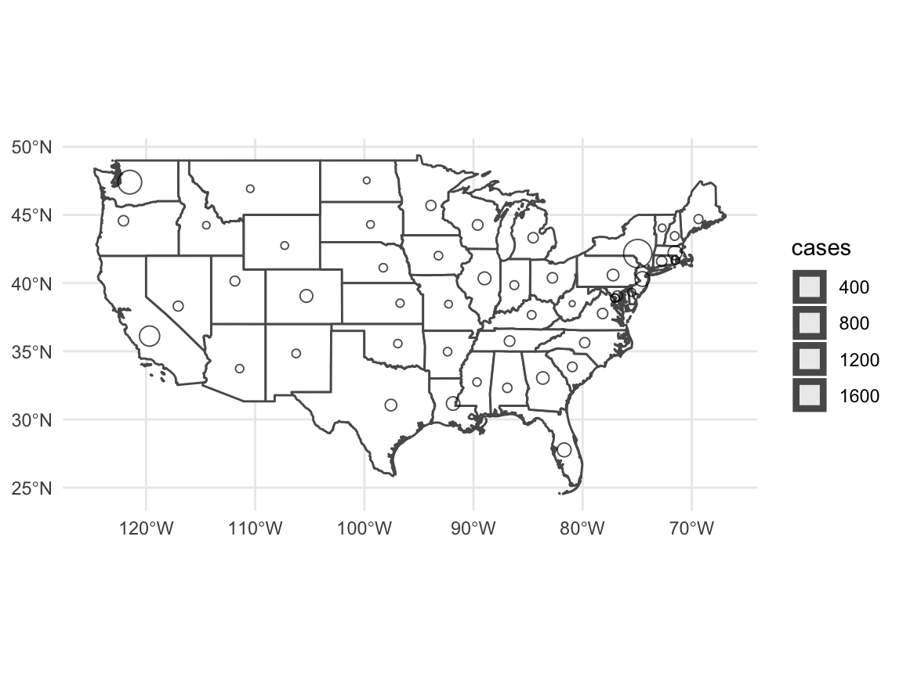

Showing the Spatial Distribution of Covid-19 Confirmed Cases
Jarrett Byrnes
3/11/2020
Source:vignettes/spatial_coronavirus.Rmd
spatial_coronavirus.RmdGenerating spatial data
The coronavirus package using the rnaturalearth package for spatial information. Natural Earth provides a wealth of spatial data easily accessed via R as sf objects. Using sf, we can do a spatial join on the coronavirus data to get it synced up with the ne_countries() data from rnaturalearth.
Let’s get the data as both points for plotting as well as polygons we can fill. We will filter to confirmed cases only.
Plotting
Great! We can now see what the spatial distribution looks like simply using ggplot. Note, the polys do not contain any records with nothing in them, so we’ll need a baseline worldmap.
library(ggplot2)
worldmap <- ne_countries(returnclass = "sf")
ggplot(data = worldmap) +
geom_sf(fill = "white") +
geom_sf(data = coronavirus_polys,
mapping = aes(fill = log10(cases+1))) +
geom_sf(data = coronavirus_points,
mapping = aes(size = cases),
alpha = 0.7, color = "black") +
scale_fill_viridis_c(option = "D",
breaks = 0:4, labels = 10^c(0:4)) +
scale_size_continuous(range = c(1, 8)) +
labs(fill = "# of Cases", size = "# of Cases") +
theme_minimal()
Note, rnaturalearth returns lots of information, such as population size, which we might want to get percentages, etc.
Single Country
What if we had wanted to just do a single country? We can manually implement the steps inside of the coronavirus_spatial ourselves quite easily. Let’s look at the continental US, for example. Rather than doing a lot of string manipulation on the Province.State column, we can use rnaturalearth with an st_join to get the info we want for grouping calculations.
usa <- ne_states(country = "United States of America", returnclass = "sf")
usa_confirmed_sf <- coronavirus %>%
filter(Country.Region=="US") %>%
filter(type=="confirmed") %>%
st_as_sf(coords = c(x = "Long", y = "Lat"),
crs = st_crs(usa))
usa_points <- st_join(usa_confirmed_sf, usa) %>%
group_by(name) %>%
summarize(cases = sum(cases)) %>%
filter(!(name %in% c("Hawaii", "Alaska"))) %>%
filter(!is.na(name))
usa_polygons <- st_join(usa, usa_confirmed_sf) %>%
group_by(name) %>%
summarize(cases = sum(cases))%>%
filter(!(name %in% c("Hawaii", "Alaska")))%>%
filter(!is.na(name))We can now see how things are as of the data downloaded on Sun Apr 05 2020.
ggplot(data = usa %>% filter(!(name %in% c("Hawaii", "Alaska")))) +
geom_sf(fill = "white") +
geom_sf(data = usa_points, mapping = aes(size = cases),
alpha = 0.7) +
theme_minimal()
Or we can look at things state by state using fill.
ggplot(data = usa %>% filter(!(name %in% c("Hawaii", "Alaska")))) +
geom_sf(fill = "white") +
geom_sf(data = usa_polygons, mapping = aes(fill = cases)) +
theme_minimal() +
scale_fill_viridis_c(na.value = "white")